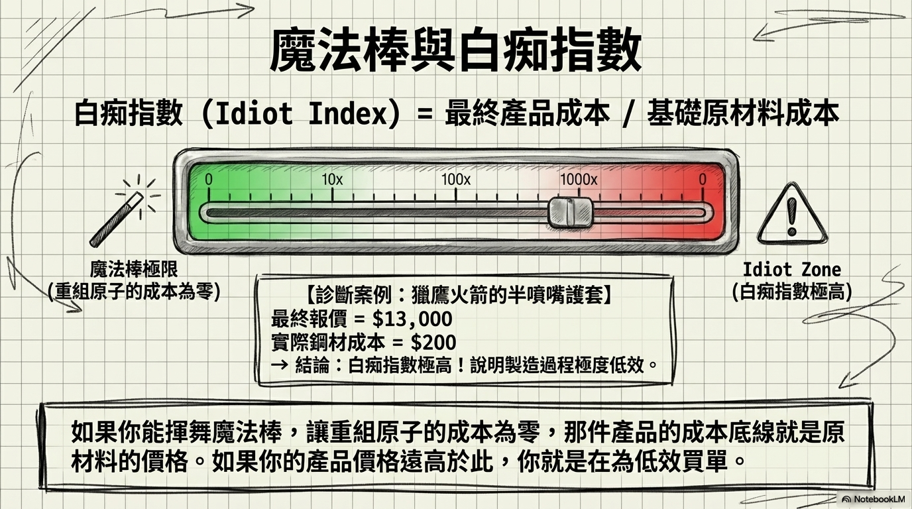
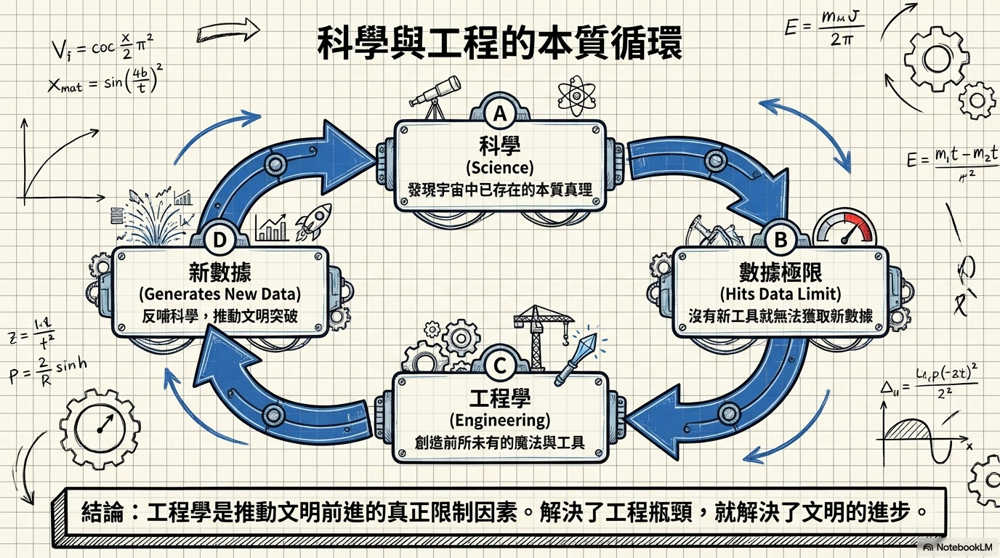
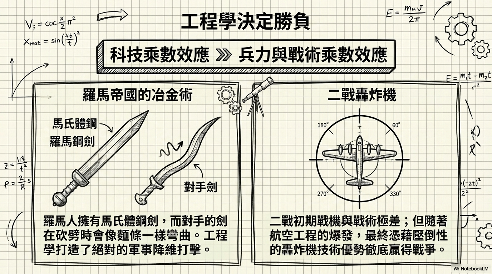

「工程就是魔法。誰不想成為魔法師呢？」
Elon 的父親是極有天賦的電機與機械工程師，小時候帶他一起做模型飛機和電路板。在南非沒有現成的模型火箭，他必須去藥劑師那裡買原料、自己調配火箭燃料。
小時候他很怕黑，但當他理解「黑暗只是缺乏可見光波長（400-700 奈米）的光子」後，他想：「害怕缺少光子也太蠢了吧。」於是就不怕了。
他讀到 Arthur C. Clarke 的名言：「任何足夠先進的技術都與魔法無異。」他想，如果我能推進技術，那就像成為魔法師一樣。三百年前，飛行、遠距通訊、即時取得全球資訊——這些都會被當成巫術。
Elon 多次閱讀孫子兵法，但他認為書中缺少一章：「如果你有決定性的技術優勢，你可以用最小傷亡獲勝。」
羅馬人靠優越的冶金技術贏得戰爭——他們的馬氏體鋼劍比對手的劍更堅硬。對手的劍會像麵條一樣彎掉。羅馬人還修建道路，讓軍隊快速移動，這也是工程優勢。
二戰中，美國起初的戰鬥機戰術糟糕、飛機落後，整個中隊被擊落而日方零損失。但創新速度決定了最終勝負——技術是持續的剪刀石頭布。核彈是最極端的例子：誰先造出來，誰就贏了，就這麼簡單。
Elon 說他的腦中像一場風暴，點子多到不可能全部執行。但他強調：「點子幾乎無關緊要。原型很容易，量產才是地獄。」
Tesla 不只是汽車公司，而是硬核科技公司——鋁捲和塑膠顆粒進入工廠一端，成品汽車從另一端出來。所有車輛工程、動力系統、軟體都是自己做的。Toyota、Daimler、Mercedes 向 Tesla 購買電動動力系統，正是因為這些問題不容易解決。
他說：「去火星的想法不難，那無關緊要。真正到達火星，那才是困難的部分。」
"Engineering is, for all intents and purposes, magic, and who wouldn't want to be a magician?"
工程，在各種意義上，就是魔法。誰不想成為魔法師呢？
"Science is discovering the essential truths about what exists in the universe. Engineering is about creating things that have never existed before."
科學是發現宇宙中已存在的本質真理。工程是創造從未存在過的事物。
"The idea of going to Mars is not hard; that's irrelevant. Getting to Mars is the hard part."
去火星的想法不難，那無關緊要。真正到達火星，那才是困難的部分。



點子不值錢，執行才值錢。
工程是推進文明的引擎——把不可能變成理所當然，這就是魔法。